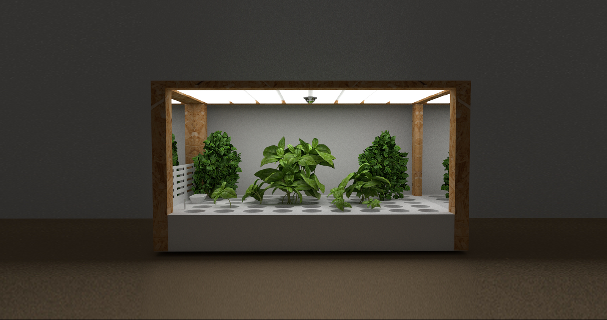
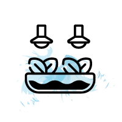
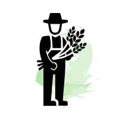
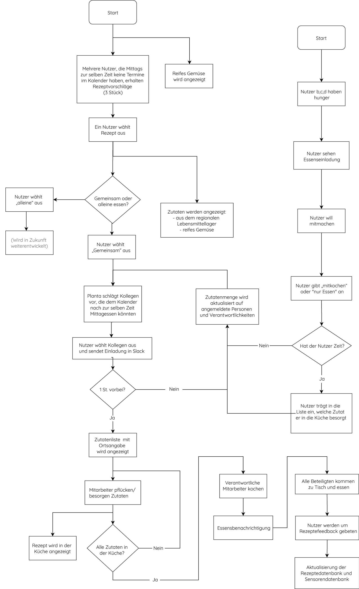
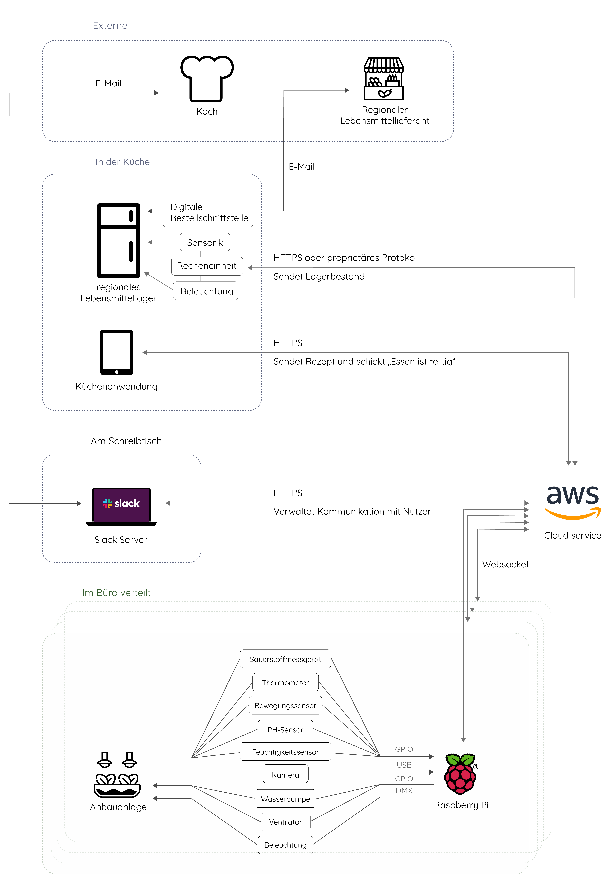

My Role
Desk/User researchUser flow
Prototyping
Technical concept
Team
Laura SchillkeSebastian Meidel
Year
Winter 2018/2019Our connection to food
Previous research has shown that, especially in cities, the distance between humans and food production has increased considerably. This has a number of consequences such as a wasteful food consumption and a growing population but not enough resources to supply this growth. Hence we were asking ourselves: How could urban agriculture be integrated socially and efficiently into people's immediate environment? And how well could one advance digital self-sufficiency?Why in the office?
Fostering urban food production is beneficial in places where food is also consumed. Offices are therefore very suitable here, as employees eat together five days a week during lunch break. This way the distance between cultivation and consumption as well as transport distances can be reduced.
The components

A cultivation system
A cultivation system
![]()
An in-house chatbot coordinates lunch and harvesting

Connection to regional food suppliers
Connection to regional food suppliers
Integrating into an office
As more and more companies begin to have company messengers such as slack, the most suitable communication interface is a chatbot within an already existing communication system.-
Integrated in Slack
It is integrated in the company’s internal messenger and coordinates the lunch among the office workers -
Calendar integration
As soon as ripe harvest is expected it checks free calendar entries to find adequate times for lunch -
Recipe recommendation
It also suggests recipes for ripe vegetables and gives tips and tricks on how to grow them.
User flows, sequence diagrams and wire frames
Designing a system means considering all components and how they are linked to each other. For this we used a variety of methods such as a flow chart, system diagram, sequence diagram and wire frames. The challenge was to create a user flow, that allows enough space for informal communication (coffee talks and other non-virtual arrangements) but also guides users to a successful lunch time.

